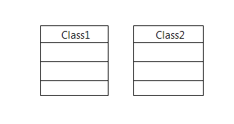
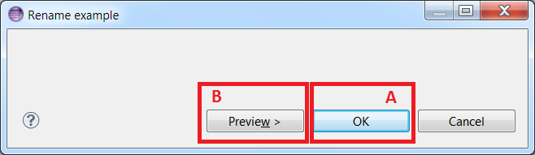
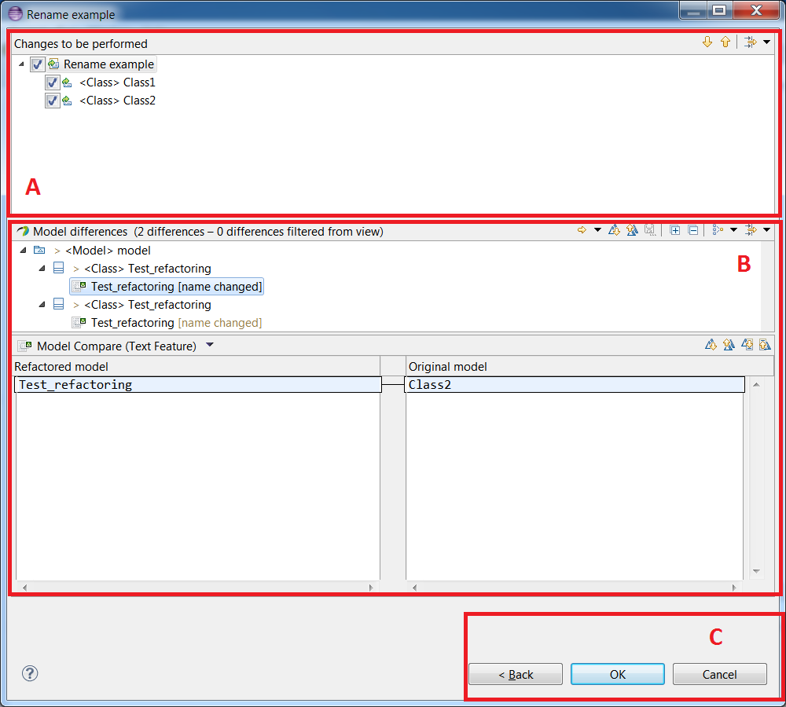
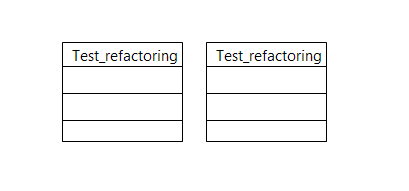
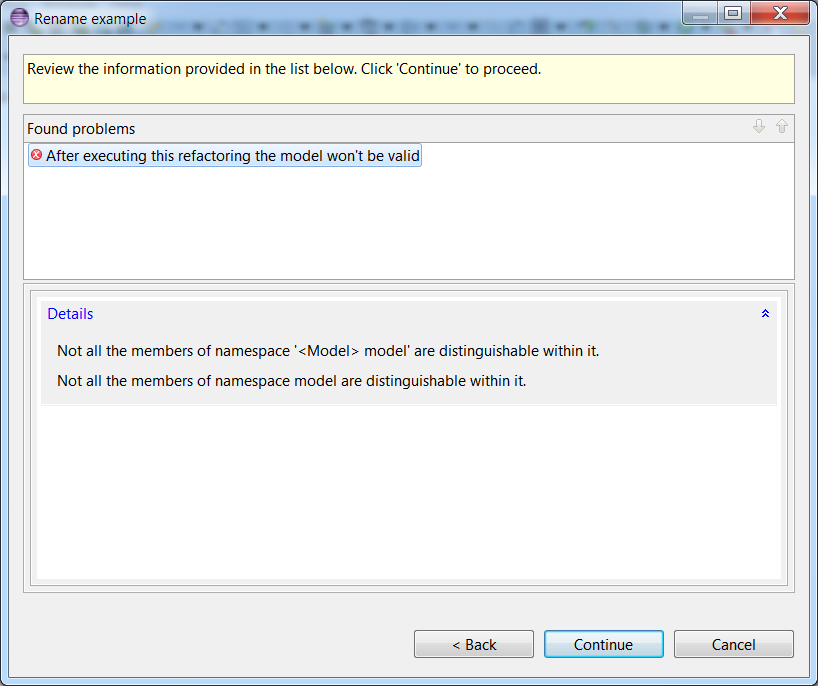

In this documentation we will execute a refactoring which renames to "Test_refactoring" the UML::NamedElement of a model. We will execute this refactoring on the following model:

Model refactor
As you can see in the following image, the user can choose between displaying a preview of the impact the refactoring will have on the model or executing the transformation directly.

- A area: If the user clicks on the 'OK' button, the transformation will be directly executed.
- B area: If the user chooses to click on the 'Preview' button, a preview of the impact the transformation will have on the model will be displayed.
Preview page
The following image illustrate the preview page.

- In the A area the user is able to select the changes he really wants to apply. Only the checked changes will be applied. For refactorings which execute the same transformation on each element from a specified list (here the list of elements are the selected ones, and for each one we change its name), there is one change for each element. For refactorings more general only one change is created.
- In the B area a comparison between the original model and the refactored model is displayed. Here we can see that this transformation changes the name to "Test_refactoring" of each element.
- In the C area the user can decide to execute the transformation by clicking on the 'OK' button, canceling the refactoring or going back to the home page refactoring.
In our example if we decide to execute the refactoring the model will be:

Model validity
Before applying the transformation, if the refactoring will affects the validity of the model the Papyrus refactoring tool warns the user and gives him the list of the problems the refactoring will cause.

In our case after the refactoring, two UML::Class in the same container will have the same name (and the same qualified name so). The Papyrus refactoring tool warns about this problem.